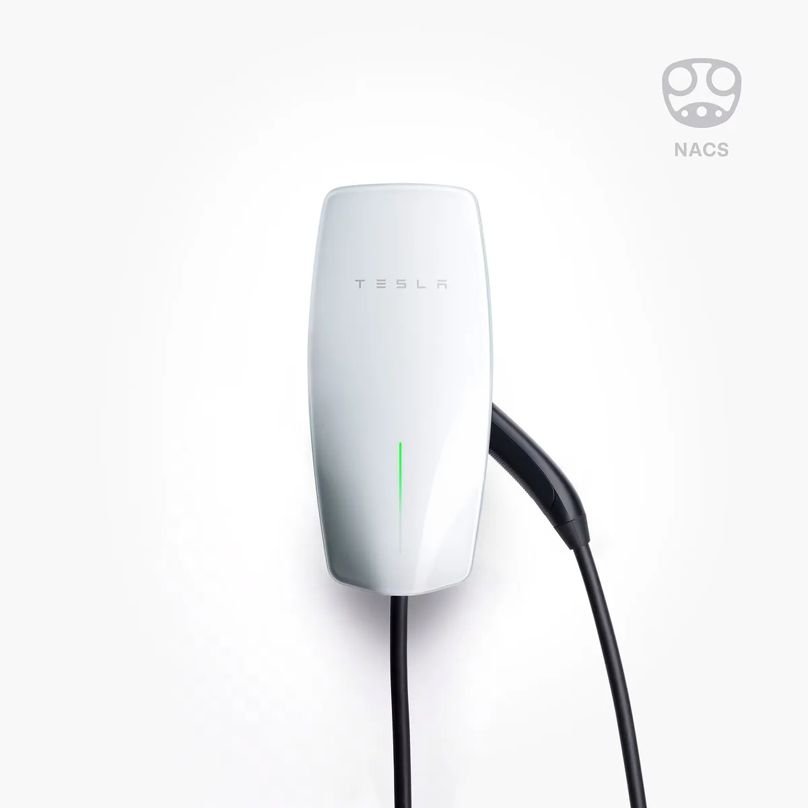
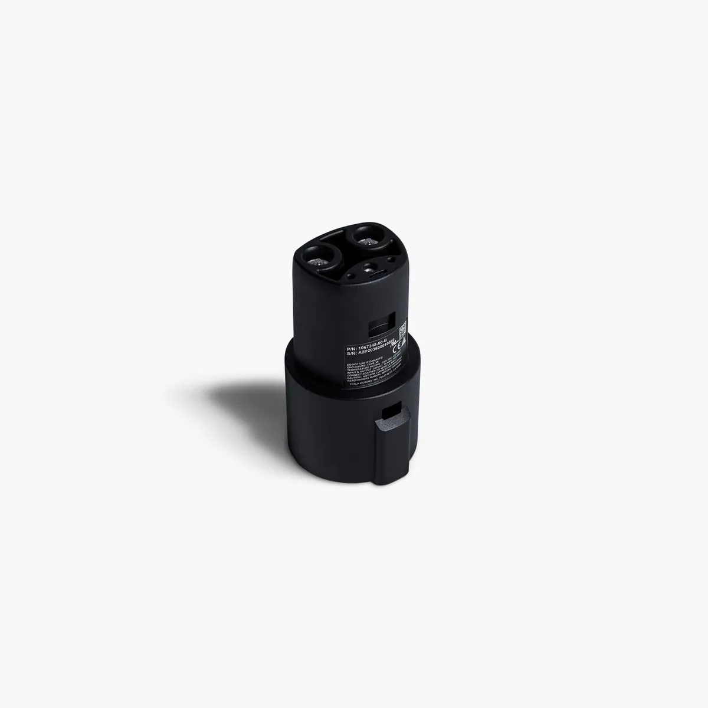
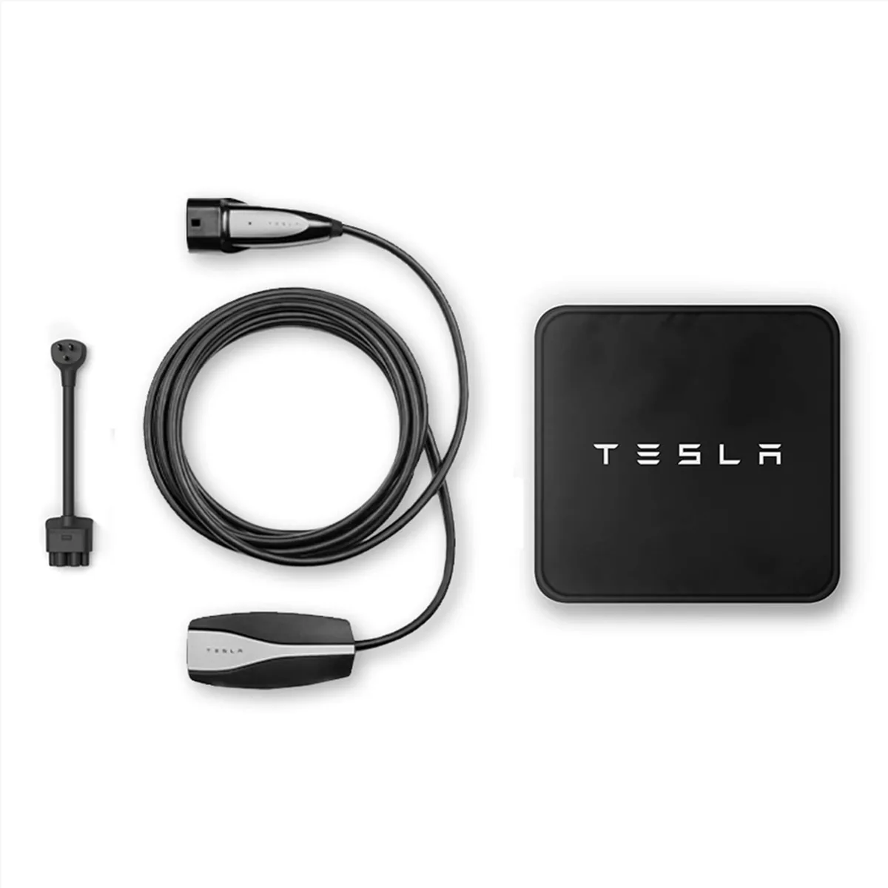
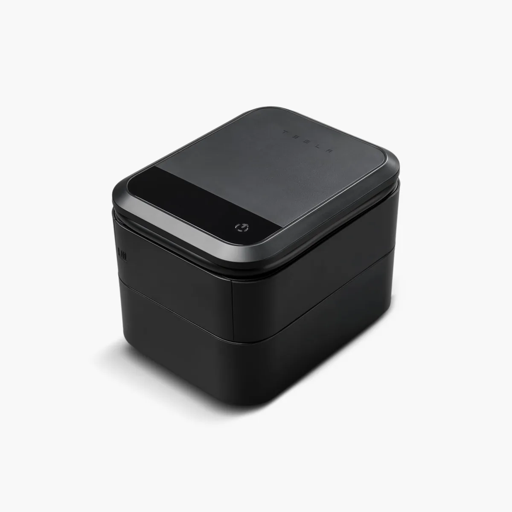

Type 2
2021-08-01 後交付新車常見慢充規格；家用壁掛座、目的地充電與停車場慢充需看槍頭。
配件圖鑑
接頭規格、轉接頭、家充設備、旅充、腳踏墊、後廂墊、螢幕保護貼與補胎工具集中整理。 先確認車端規格，再看用途與連結。


充電接頭
同樣是「Tesla 充電」，AC 慢充、DC 快充、舊款 TPC 與第三方 J1772 不能混用判斷。
2021-08-01 後交付新車常見慢充規格；家用壁掛座、目的地充電與停車場慢充需看槍頭。
第三方 DC 快充常見規格；Tesla CCS2 轉接頭最高標示 250 kW，官方註明不適用慢充。

台灣舊款 Tesla 專用規格；Tesla 台灣標示 TPC 適用於 2021-08-01 前交付新車。

第三方 AC 慢充常見介面；Tesla J1772 轉接器標示支援最高 19.2 kW，主要給 TPC 車主使用。
| 規格 | AC / DC | 台灣常見用途 | 車主確認 | 風險 |
|---|---|---|---|---|
| Type 2 | AC 慢充 | 家充、目的地充電、公司與停車場慢充 | 車端是否為 Type 2 / CCS2 AC 端 | 社區施工、電容量、計費與槍頭不同 |
| CCS2 | DC 快充 | 第三方快充、長途備援 | 車款與轉接頭是否適用 | 官方 CCS2 轉接頭不適用慢充；快充功率依站點與電池狀態變動 |
| TPC | AC 慢充 / Tesla 舊規格 | 舊款 Tesla 家充、旅充、目的地充電 | 是否為 2021-08-01 前交付新車或中古舊規格車 | 不能只用年式推測，需看車端與車主手冊 |
| SAE J1772 | AC 慢充 | 第三方慢充站、早期公共充電設備 | TPC 車主需確認 J1772 轉接器適用性 | 第三方充電價格與規範由營運商制定 |
| CHAdeMO / CCS1 | DC 快充 | 舊站點、進口車、多規格站點 | 是否真的有相容轉接與車端支援 | 台灣 Tesla 車主不應把多規格站點視為保證可用 |
充電產品
台灣 Tesla Shop 標示售價 NT$22,800；依安裝地點電力配置選 16A、24A 或 32A 版本。
台灣 Tesla Shop 標示售價 NT$22,800，線長 7.3 公尺；頁面註明 TPC 適用於 2021-08-01 前交付之新車。

台灣 Tesla Shop 標示售價 NT$9,500；內含 6 公尺充電纜線、NEMA 5-15 轉接器與收納袋，最大電流標示 32A。
台灣 Tesla Shop 標示售價 NT$7,950；支援最高 250 kW，官方註明不適用慢充充電樁。
台灣 Tesla Shop 標示售價 NT$3,400；頁面註明支援最高 19.2 kW，適用於 2021-08-01 前交付之車輛。
交車配件
JOWUA Taiwan Model Y 行李廂全套組合標示適用 Model Y 煥新版 2025+ 與 2021-2024，包含防水行李廂墊、後排椅背墊與後行李廂儲物盒。
JOWUA 產品頁
JOWUA Model 3/Y 玻璃保護貼提供 Matte 與 Crystal Clear 版本，產品頁標示 9H 強化玻璃、抗眩與防指紋選項。
JOWUA 產品頁
Tesla Air Compressor + Tire Repair Kit 3.0 標示最大壓力 80 psi、流量 25 L/min。官方提醒僅為臨時修補，胎面破洞大於 6 mm 或胎壁破損不可使用。
Tesla 產品頁配件購買順序
導購連結
含推薦或分潤可能性的連結會標示 sponsored / affiliate；價格、庫存與適用車款以商店頁面為準。
透過推薦連結購車，最高可折抵 NT$8,000；實際優惠依 Tesla 結帳頁為準。
https://ts.la/wulingteen795928
打開推薦連結
Tesla 車內、收納、防護與充電周邊配件；台灣站有 Model Y 煥新版配件。
美國 Tesla 配件商，品項涵蓋內裝、外觀、收納、防護與補充型配件。
Tesla / Rivian 配件商，適合找螢幕保護、內裝整理、小型工具與實用配件。
資料來源
查核日：2026-06-04。價格、庫存、適用車款、保固與活動以連結頁面最新資訊為準。